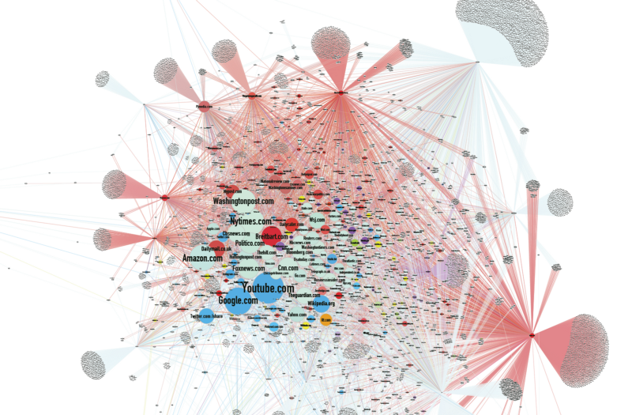

Openness in Bibliotheken
Potentiale offener Dienste und Chancen für die Organisationsentwicklung
Vortrag von Felix Lohmeier
SLUB-Forum
7.12.2016, Dresden
Agenda
- Begriff Openness
- Risiken und Regeln
- Handlungsfelder für Bibliotheken
- Checklisten und Siegel
- Openness als Leitbild?
- Openness innerhalb der Organisation?
- Diskussion
1. Was bedeutet Openness im Kontext der Wissenschaft?
Abstrakt betrachtet, ist Offenheit eine Kultur, die aus offenen Inhalten, offenen Infrastrukturen und offenen wissenschaftlichen Prozessen gedeiht.
Praktisch bedeutet es meist:
Transparenz und Sharing mit neuen Technologien
2. Risiken und Regeln
Alles vollständig und unreguliert öffnen? Teilhabemöglichkeiten können auch zu Problemen führen...
Beispiel "Filterblasen"
wie eine Cocktailparty mit Trennwänden...
(Screenshot aus Video von Satiresendung extra 3)
Beispiel "Fake News"
Bewusste Falschmeldungen, um Aufmerksamkeit zu generieren und Meinungen zu beeinflussen. Akteure nutzen Methoden der Suchmaschinenoptimierung.
Datenvisualisierung der Fake-News-Netzwerke zur Präsidentschaftswahl von Jonathan Albright:
Beispiel "Suchvorschläge"
Artikel von Carole Cadwalladr im Guardian hat jüngst (4.12.16) rassistische und sexistische Suchvorschläge bei Google aufgedeckt. Die Algorithmen erkennen Propaganda nicht. Screenshot aus dem Guardian:
Wir brauchen Prinzipien
Offenheit ohne Grundsätze kann schädlich sein.
- Gegen Filterblasen: Offene Netze, Offenlegung von Algorithmen und ggf. auch kartellrechtliche Vorgaben
- Gegen Fake-News: Quellenkritik, Wertschätzung für journalistische Arbeit und ggf. auch Strafverfolgung
- Gegen Hass-Suchvorschläge: Zivilgesellschaftliche Kontrolle und ggf. auch gesetzliche Vorgaben
Siehe auch: Mozilla Manifest "unsere 10 Prinzipien"
Beispiel für Prinzipien in der Wissenschaftskommunikation
12 Grundsätze der Vienna Principles for Scholarly Communication
| Zugänglichkeit | Zusammenarbeit |
| Auffindbarkeit | Qualitätssicherung |
| Wiederverwendbarkeit | Evaluierung |
| Reproduzierbarkeit | Validierter Fortschritt |
| Transparenz | Innovation |
| Verständlichkeit | Wohl der Allgemeinheit |
3. Handlungsfelder für Bibliotheken
Openness mitgestalten? Es gibt viel zu tun und wenig einfache Lösungen. Hier ein paar Beispiele...
Open Access
Ein alter Hut?
10 Open Access Tage (2006-2016)
10.-11.10.2016 in München
Aktuelle Probleme
- Immer noch mangelnde Abdeckung beim Zweitveröffentlichungsrecht
- Sehr hohe Article Processing Charges (APCs) beim "goldenen Weg"
- "Double Dipping" (vgl. Mittermaier 2015)
Open Educational Resources
Lernmaterialien, die unter einer offenen Lizenz stehen und frei (nach)nutzbar sind.
(vgl. Definition Creative Commons)
Problem
Aktuelle Entwicklungen gehen vor allem hin zu Massive Open Online Courses (MOOCs) auf geschlossenen Plattformen wie Coursera. Diese Lernmaterialien sind erst nach (teils kostenpflichtiger Anmeldung) zugänglich.
Gianpiero Petriglieri (2013): Let them eat MOOCs
“MOOCs aren’t digital keys to great classrooms’ doors. At best, they are infomercials for those classrooms. At worst, they are digital postcards from gated communities.”
Lösung
Publikation der Materialien im Web.
Entweder so wie früher auf persönlichen Webseiten der Lehrenden oder mit moderner Publikationssoftware wie Gitbook oder Handbuch.io.
Beispiel: Skript zum Seminar "Wir bauen uns einen Bibliothekskatalog" an der HAW Hamburg
Open Peer Review
Noch wenig verbreitet, da es eine Änderung in der Wissenschaftskultur erfordert.
Für die Open-Access-Bewegung ist es aber ein wichtiger Schritt, weil Gutachtertätigkeiten damit sichtbar werden.
Im Bibliothekswesen wird es z.B. in der Zeitschrift Informationspraxis erprobt.
van der Vaart, Lilian et al.:
e-InfraNet: 'Open' as the default modus operandi for research and higher education
2013, S. 11. CC-BY-SA
4. Checklisten und Siegel
close
10 Schritte für mehr Openness in Ihrer Bibliothek
Ideensammlung auf 13. Inetbib-Tagung in Stuttgart

22 Ideen sind zusammen gekommen
Abstimmung über TOP10 vom 10. bis 31. Mai
Grundlage für einen Wettbewerb
Gerald Langhanke (TU Darmstadt) hatte die Idee, die Anwendung der Checkliste durch einen Wettbewerb zu fördern. Daraus hat sich Open Library Badge entwickelt.
Bibliotheken, die 3 von 10 Kriterien der Openness-Checkliste erfüllen, können den Badge erhalten. Best Practices werden gesammelt.
5. Openness als Leitbild?
Gemeinsamkeiten
Grundlegend ist die (alte) Idee des freien Zugangs zu Informationen und zu Wissen, oft zusammen mit der Idee der Wissensallmende.
Vorschlag
Bibliotheken als Wächter für den (dauerhaft) freien Zugang zum Wissen
Anwälte der Offenheit im Dienste der NutzerInnen, der wissenschaftlichen Standards und des kulturellen Erbes
Siehe auch: Lohmeier/Mittelbach (2014):
Offenheit statt Bündniszwang
Zukunftsgerichtete Legitimation für Bibliotheken
- Knüpft an bibliothekarische Traditionen an
- Hilft das rückwärtsgewandte Image abzustreifen
- Löst Konflikte zwischen digitaler Bibliothek und Papierbibliothek auf
- Anwendbar auf alle Bibliotheksfelder
- Entspricht Standards wissenschaftlichen Arbeitens
Kooperationen
Handeln einzelner Bibliotheken fügt sich durch geteilte Prinzipien in einer Netzwerkstruktur zusammen.
Dafür sorgen gemeinsame Wertvorstellungen und damit verbundene technologische Prinzipien (vgl. Library Empowerment Manifesto von Adrian Pohl)
Kooperationen werden leichter und bilden sich bedarfsorientiert "von unten"
Siehe auch: Mittelbach (2015):
Modernes Datenmanagement
Beispiel Katalogentwicklung SLUB Dresden
Nachnutzung der TYPO3-Extension "find" der SUB Göttingen, die eigentlich für Digitale Editionen entwickelt wurde. Code und Dokumentation lagen unter einer freien Lizenz bei Github, daher Abstimmung nicht notwendig.
Das Contentmanagement-System TYPO3 und der Suchmaschinen-Index SOLR sind ohnehin quelloffen.
Entwicklung eines Katalogfrontends war in kurzer Zeit möglich, weil Komponenten "nur" integriert und angepasst werden mussten.
Vertrauen und Integrität
Don Tapscott
“You need to have integrity as part of your bones and your DNA as an organization, because if you don't, you'll be unable to build trust, and trust is a sine qua non of this new network world.”
Vortrag Four principles for the open world
TEDGlobal, Juni 2012
Erfordert also konsequentes Handeln
- selbst nur noch Open Access publizieren
- freie Lizenzen für Digitalisate (oder gar keine)
- Kündigung von Lizenzverträgen mit DRM
- Open Source bei Auftragsvergabe berücksichtigen
- Keine Geheimhaltungsklauseln mehr akzeptieren
6. Openness innerhalb der Organisation?
Der geschützte Raum einer Organisation bietet die Möglichkeit, neue Methoden auszuprobieren. Beispiel: Intranet
Dafür müssen auch hier die Rahmenbedingungen stimmen: Transparenz, Fehlertoleranz und ein offenes Miteinander.
Im Idealfall stimmt das Handeln der Institution mit der Betriebskultur überein. Wer bei den neuen Openness-Trends mitmischen und sich nicht isolieren möchte, muss also auch intern die Betriebskultur entwickeln.
Beispiele für Gestaltungsmöglichkeiten
- Mehr Nutzungsmöglichkeiten durch freiere Lizenzverträge (Beispiel: Text Mining)
- Inspiration und neue Freunde & Förderer durch Öffnung von Daten (Beispiel: Coding Da Vinci)
- Freien Zugang zu Wissen sichern und Alternative zu Kommerzialisierung und Monopolbildung bieten (Beispiel: Überwachungsfreie Nutzung)
7. Diskussion
Openness in Ihrem persönlichen Arbeitsgebiet
15 Minuten Austausch in Gruppen
Ergebnisse auf Karten für die Pinnwände
Credits / Lizenz
- Bilder: siehe Angaben auf der jeweiligen Folie
- Icons: Font Awesome (MIT Licence)
- Präsentations-Framework: Reveal.js (MIT Licence)
- Eigenes: CC-BY